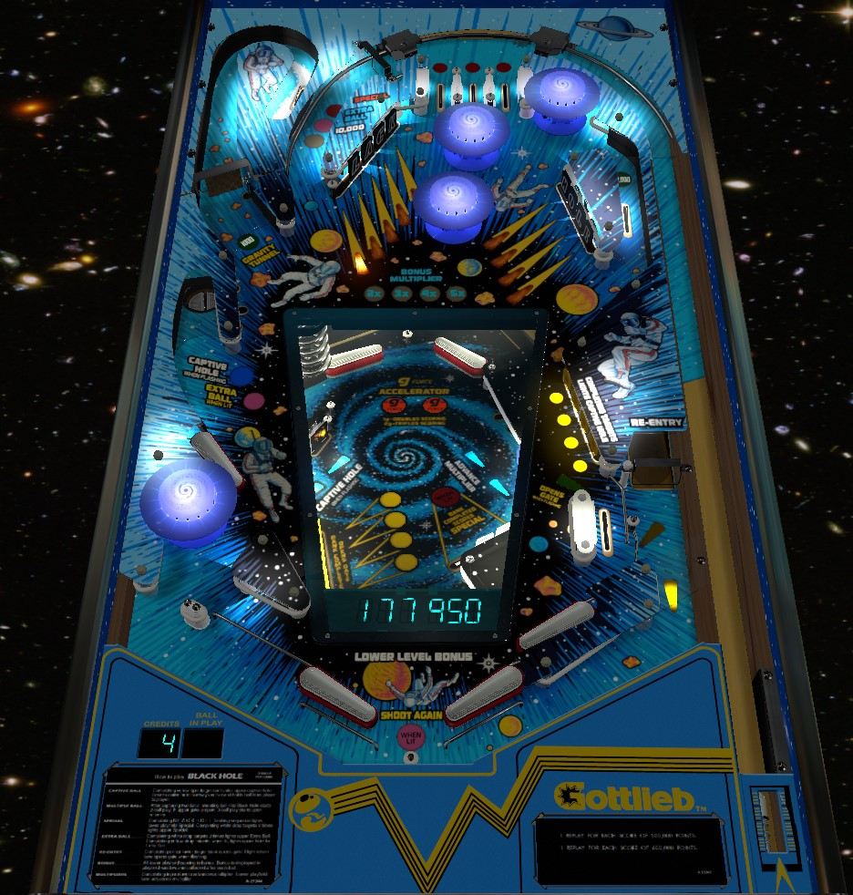

Black Hole is a very challenging game that requires playing all parts of two playfields to score well. Lower playfield is accessed by the Gravity Tunnel spinner lane; while you're down there, complete at least one bank of drop targets to open the reentry gate, allowing you to keep playing on the main playfield after draining in the bottom playfield. Complete Black and Hole on the main playfield in order to advance the lower playfield multiplier; top lanes advance bonus X, and everything on the lower playfield advances bonus as well. While fun and chaotic, multiball is nowhere near being worth the hassle and challenge.
The unconventional viewing angle selected for the game screenshot below was chosen intentionally to ensure more features of the lower playfield are visible. The screenshot was taken from the VPX recreation by Cyberpez.
Top lanes score 500 points, or 3,000 when lit. Roll through a lit lane to unlight it. Knocking out all 3 lanes advances the bonus multiplier up to its maximum of 5x and relights the top lanes. Flipper lane change is not available, so it takes plunge/nudge skill and possibly a little pop bumper luck to complete these lanes. The bonus multiplier is not carried from ball to ball, but the status of the current set of lanes is held in memory.
Score 100 points in a 5-ball game or 1,000 points in a 3-ball game, and also close the Re-Entry Gate if it is open.
Drop targets score 500 points when not lit and 5,000 points (in a 3 ball game) or 3,000 points (in a 5 ball game) when lit or flashing. The overarching goal of these banks is to spell Black and Hole in order: lit targets are letters that have already been collected in proper sequence, flashing letters are the next one you need for the sequence, and unlit letters are not needed yet. These banks only reset when all targets are knocked down, so if you complete Black or Hole out of order, you'll need to clear the whole bank to reset the drops and get another chance at the letter you need.
Completing the Black target bank once in any order lights the spinner in the upper left for 1,000 points per spin for the rest of that ball. Completing the Hole target bank in any order lights the upper right side lane that runs behind the Hole targets for 10,000 points for the rest of that ball.
Completing Black or Hole in order lights a G-Accelerator, which serves as a playfield multiplier for the lower playfield only; 2x for completing just one of Black or Hole in order, and 3x for completing both in order. Progress on spelling Black and Hole in order is carried over from ball to ball until both Black and Hole are spelled and 3x G-Accelerator is lit, at which point the entire sequence is reset at the end of the turn.
Completing both Black and Hole in order also lights the 3-bank of white drop targets on the lower playfield for a Special.
Targets in the yellow 4-bank score 3,000 points when lit or 500 when not lit. Hit a lit target to unlight it. Unlighting one of these targets will in turn light one of the four yellow drop targets on the lower playfield. Completing the main playfield standup targets qualifies the main playfield left saucer for a lock and lights the main playfield right in lane to open the Re-Entry Gate, which is discussed further in the next section.
The lower playfield can be accessed at any time by making a full shot to the Gravity Tunnel spinner/u-turn lane in the upper left of the main playfield. When the ball drains out of the lower playfield, it will be ejected via the Re-Entry hole in the right out lane. If the Re-Entry Gate is not open, this eject will spit the ball directly into the drain, making it so that a lower playfield drain ends your turn. There are 2 ways to open the Re-Entry Gate:
Always be sure to do one of these two so that you keep your turn and continue playing after the ball drains out of the lower playfield. The gate does not close when it is used; it only closes at the end of the ball or when a bumper or slingshot is hit on the main playfield.
Scores listed below for lower playfield features are not added to your player score directly; they are added to the Lower Level Bonus, shown on the readout in the playfield and awarded at the end of the ball. Base values for scoring features are listed in this guide: lower playfield features increase the Lower Level Bonus by 2x or 3x the amounts listed here if G-Accelerators have been qualified by completing Black and/or Hole in order on the main playfield. At the end of the ball, the displayed Lower Level Bonus times the bonus multiplier earned from the top lanes will be added to your total score.
Is always either lit or flashing; flashing indicates that a ball can be locked there, scoring 3,000 points, and lit indicates that a ball is *already* locked there. A ball locked on the lower playfield stayts there across turns and can be stolen in a multiplayer game.
Drop targets score 3,000 points when lit or 300 when unlit on 3-ball play, or 1,000 when lit and 100 when unlit on 5-ball play. Each yellow standup target on the main playfield, when hit, lights one of the yellow drop targets on the lower playfield. Completing the lower playfield yellow drop targets resets them and opens the Re-Entry Gate.
Each target down scores 500 points. Completing the bank advances the value of the "rollunder lane", located on the main playfield between the Gravity Tunnel spinner lane and the Black drop targets, in the sequence 5,000 - 10,000 - extra ball - Special. Completing the white 3-bank also opens the Re-Entry Gate, an awards an instant Special if both Black and Hole have already been completed in order.
Scores 100 points and advances the bonus multiplier.
To start the multiball progression, you must enter the lower playfield via the Gravity Tunnel spinner lane when there are already balls locked in the Captive Hole on each of the two playfields.
To lock a ball on the main playfield, complete the standup targets on the lower right of the main playfield to light the lock, then lock a ball in the saucer on the left of the main playfield. The game will remember your progress on the standup targets as well as whether or not the lock is lit from ball to ball, but as soon as you actually lock the main playfield ball, you must start multiball on that ball; otherwise, the main playfield lock will kick out when you drain and you will need to relock the ball on your next turn.
The lower playfield lock is always available, and a ball locked there remains in the Captive Hole until it is used in multiball or until the game ends.
When you enter the lower playfield while there is a ball locked on both playfields, 2-ball multiball begins on the lower playfield. You continue playing on the lower playfield only until both balls drain. When they do, the main playfield lock will be kicked out, and both lower playfield balls will be ejected through Re-Entry. If the Re-Entry Gate is not open, the two lower playfield balls will be ejected into the drain, and you resume single ball play with only the ball that was locked on the main playfield. If the Re-Entry Gate is open, all 3 balls will end up on the main playfield at the same time. Once 3-ball multiball is started, the Re-Entry Gate will remain open no matter what until there is only one ball left in play. During 3-ball multiball, you can continue to shoot the Gravity Tunnel to access the lower playfield, creating the opportunity for multiball played on both playfields at once. Multiball ends when there is only 1 ball left in play and all other balls have drained on the main playfield.
The bottom of the playfield on Black Hole strongly resembles that of Paragon (Bally, 1978). The left side has no in lane; just one left flipper and a "beast lair" area with one pop bumper and a space for the ball to drain. Use the upper left flipper to avoid this area entirely when possible. There is no one-way gate near the flipper, so a ball can roll up the lower left flipper and drain out the gap in the "beast lair" area. On the right, there are 2 flippers and an in lane. It is not possible to drain between the flippers. The right in lane scores 500 points when not lit, and 5,000 points plus opens the Re-Entry Gate when lit. The right out lane is not accessible in normal gameplay; it is just where the Re-Entry eject is pointed.
Both playfields have a center peg between the flippers.
All lower playfield scoring as described above is multiplied by 2 or 3 if one or both G-Accelerators are lit, then added to the Lower Level Bonus display. The displayed bonus times the multiplier earned from top lanes is added to your score at the end of the ball. There is no way to carry over the Lower Level Bonus or the multiplier, and there is no mid-ball bonus collect.
In competition/novelty play, specials and extra balls both score 50,000 points. Specials can also score a free game or an extra ball instead.
Extra Ball is lit at the main playfield lock hole by completing the 4-bank of lower playfield drop targets when all of them are lit, or by completing the 3-bank of lower playfield drop targets 2 times and then shooting the rollunder lane between the Gravity Tunnel and the Black drop targets that returns to the top lanes.
Special is lit by completing the 3-bank of lower playfield drop targets 3 times and then shooting the rollunder lane, or by spelling both Black and Hole in order then completing the lower playfield 3-bank once.